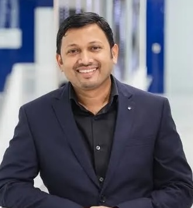

Computer Vision
Teaching support for graduate-level computer vision coursework.
About / Research profile
I work across multimodal reasoning, video understanding, large multimodal models, and self-evolving AI—with a focus on research that can move from controlled benchmarks into useful real-world systems.
I am a PhD researcher at the Mohamed bin Zayed University of Artificial Intelligence (MBZUAI).
My research spans multimodal reasoning, composed video retrieval, open-world video instance segmentation, large multimodal models, and self-evolving agentic systems. I am fortunate to be advised by Prof. Fahad Khan, Dr. Rao Anwer, and Dr. Salman Khan.
I am particularly interested in connecting foundational research with real-world deployment. My work includes efficient language models, on-device multimodal retrieval, and applied AI platforms. During my PhD, I am also working as a Research Scientist Intern at Adobe Research from June to September 2026.
My research connects multimodal understanding with efficient, adaptive, and deployable intelligence.
Grounded reasoning across images, video, language, and structured information using large multimodal models.
PrimaryComposed retrieval, temporal understanding, dense video modifications, and explainable media search.
PrimarySystems that improve through continuous feedback, tool use, retrieval, and interaction with real environments.
PrimaryVisual systems that identify unknown concepts and generalize beyond fixed vocabularies and closed-world assumptions.
PrimaryCompact LLMs and LMMs designed for reproducibility, interpretability, and resource-constrained deployment.
SecondaryEvaluation and adaptation of multimodal systems across languages, cultures, and specialist domains.
SecondaryRetrieval-augmented generation, world models, and structured reasoning over extended contexts.
SecondaryTeaching support and peer-review service across computer vision, multimodal learning, and AI.
Teaching support for graduate-level computer vision coursework.
Teaching support covering modern vision-language and multimodal learning methods.
Reviewer for CVPR, ICCV, ECCV, IJCV, ACL, and TPAMI.
Contributing detailed peer review across computer vision, multimodal AI, and machine learning.
Advisors, mentors, and collaborators who have shaped my research and applied AI work.


